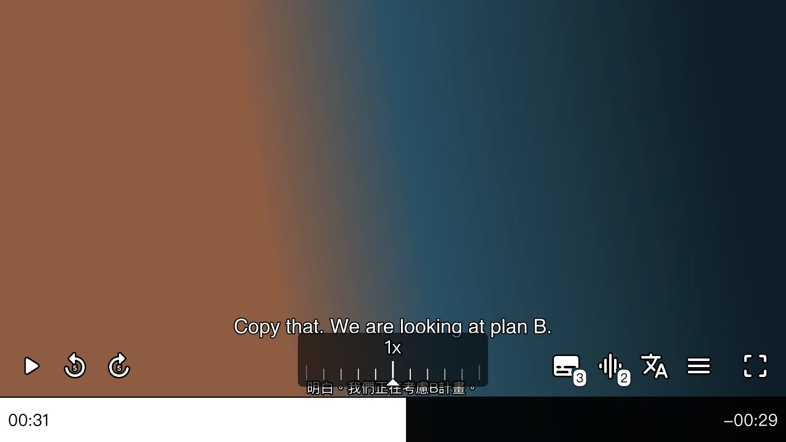
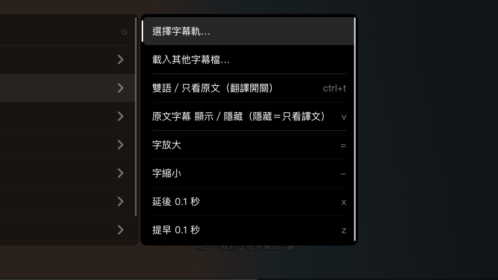
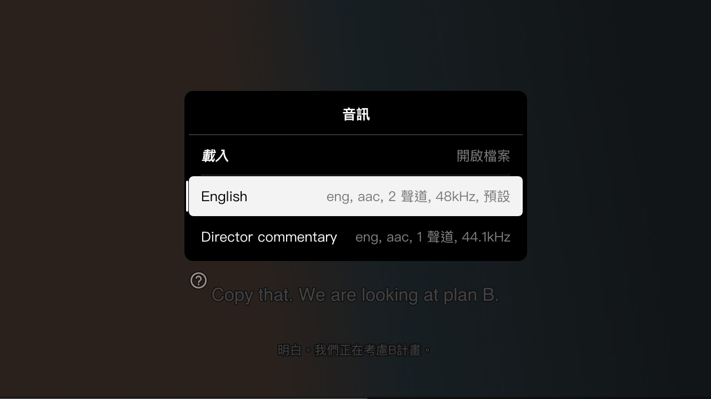

看懂是一個會「邊播邊翻譯」的影片播放器。外語片自動在原文字幕下方加上台灣繁中譯文；沒字幕的片，先聽寫出字幕再翻譯。
播你自己的影片檔：不提供影片、不下載字幕。翻譯在你自己的電腦上跑，影片和字幕不會上傳到任何地方。
第一次用？跟著圖文教學三步做完。下載鈕永遠是最新版。
BEFORE ／ AFTER
原本：只有英文，聽不懂就只能倒回去再看一次。
用看懂：原文照看，下方自動多一行台灣繁中，整部片先翻好。
三步開始
解壓到桌面或任何資料夾。Windows 版連翻譯引擎都包好了。
雙擊「一鍵下載模型」，或照連結自己下載、放進 models 資料夾。只要做一次。
翻譯引擎自動開好，播放器跟著出現，把影片拖進去就開播。
能做什麼
外掛 .srt／.ass／.vtt 或 mkv 內嵌字幕都行，整部片先翻好，看的時候不用等。
找不到字幕就自動語音辨識，聽寫出原文再翻成繁中。
口語、俚語用意譯，不逐字直翻。翻好的存在影片旁，重看免等。
右鍵選單、控制列、字幕軌與音軌一點就換；0.5x 到 3x 倍速不變調。
畫面



常見問題
不用。看懂是 MIT 授權的開源軟體；翻譯模型 Hy-MT2 是 Apache-2.0，引擎 llama.cpp、whisper.cpp 都是 MIT。
不會。翻譯和語音辨識都在你自己的電腦上跑，播放器不連任何雲端服務。只有第一次下載模型時會連到 Hugging Face。
都不是。看懂只播你電腦裡的影片檔，不提供影片、不下載字幕、不攔截串流、不破解 DRM。
記憶體 16GB 用標準模型（翻得比較好）；8GB 或較舊的電腦用輕量模型，快很多。實測 Apple M4／16GB 每句約 1–1.5 秒，有字幕的片會先翻好整部。
一般對話、口語大多自然；人名常被音譯（例如 Marcus 變成「馬庫斯」），之後會改進。機器翻譯難免出錯，重要內容請以原文為準。